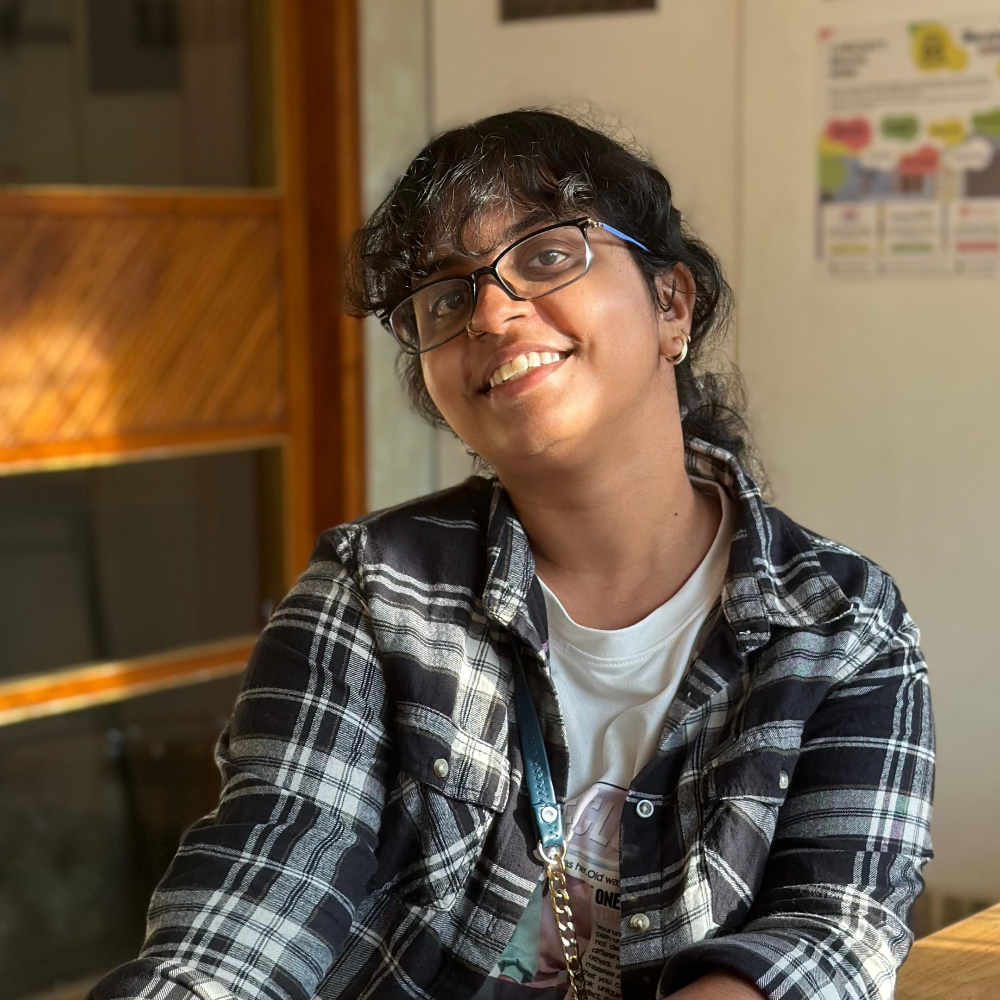

Bhargavi

Summary
Hello, I am Bhargavi, an aspiring front-end developer! I have worked as a
content writer and strategist previously. Currently, I am interested in learning HTML, CSS and JS.
Education
Work Experience
- Freelance Web Developer, Tellable
- Developed various client websites on Wordpress using a Wordpress
builder (Elementor), Shopify and Wix (with basic CSS edits)
- Collaborated and ideated with the designer on UI / UX of the client websites
- Tracked projects, suggested improvements for the workflow
and assisted other team members on similar development projects
- Cross media storyteller, Tellable
- Managed the social media accounts and projects of various clients
- Wrote copies and made graphic creatives according to the clients’ needs
- Ideated and wrote scripts for video content and edited videos
- Wrote website copies and created webpages using Wix and Elementor Pro
- PR Executive, Red Consulting
- Communicating with the client and getting required information to write press releases for publicizing events
- Coordinating with media houses
- Coordinating with influencers and socialites for Influencer activity
Skills
Hard Skills
- Adobe Creative Cloud Suite
- Photoshop
- Lightroom
- Premiere Pro
- Figma
- Elementor
- Wordpress
- Canva
Languages Known
- English (Full Working Proficiency)
- Tamil (Proficient)
General
- Content writing
- Web content writing
- Video editing
- Project Management
Achievements
- Was placed third in an intra-collegiate Photography competition
- Was placed third in poetry contest at an English literary fest
Hobbies
Contact me